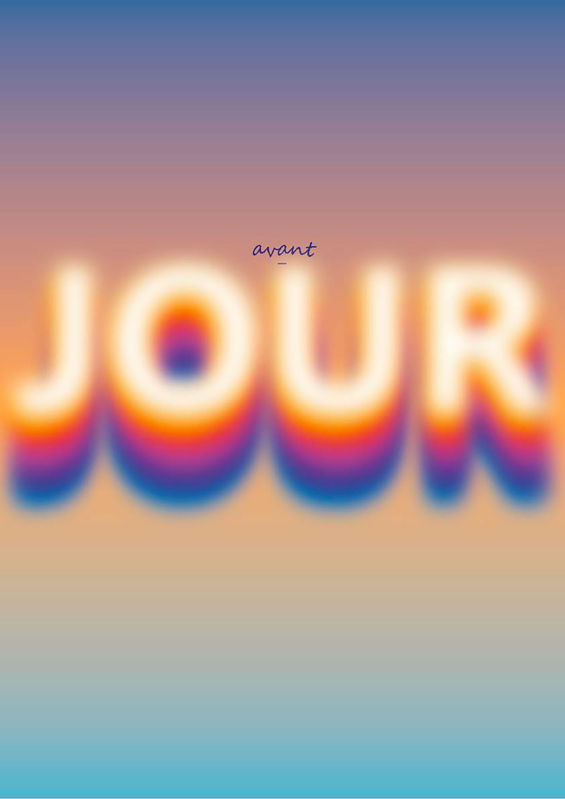

"Dis-moi dix mots" est une initiative visant à sensibiliser à la richesse de la langue française. Chaque année, elle encourage la créativité littéraire ou artistique autour de dix mots choisis en lien avec une thématique spécifique.
Il m'a été demandé de créer une affiche animée en réalité augmentée sur le thème "Dis-moi dix mots à tous les temps", en exprimant graphiquement le sens d'un mot choisi.

J'ai choisi le mot « avant-jour », qui désigne le moment qui précède le jour. Durant cette période, on observe des dégradés de couleurs subtils que je voulais représenter dans mon affiche. Enfin, dans mon animation, je souhaitais montrer des mouvements lents et des transitions de couleur douces et progressives de l'avant-jour.